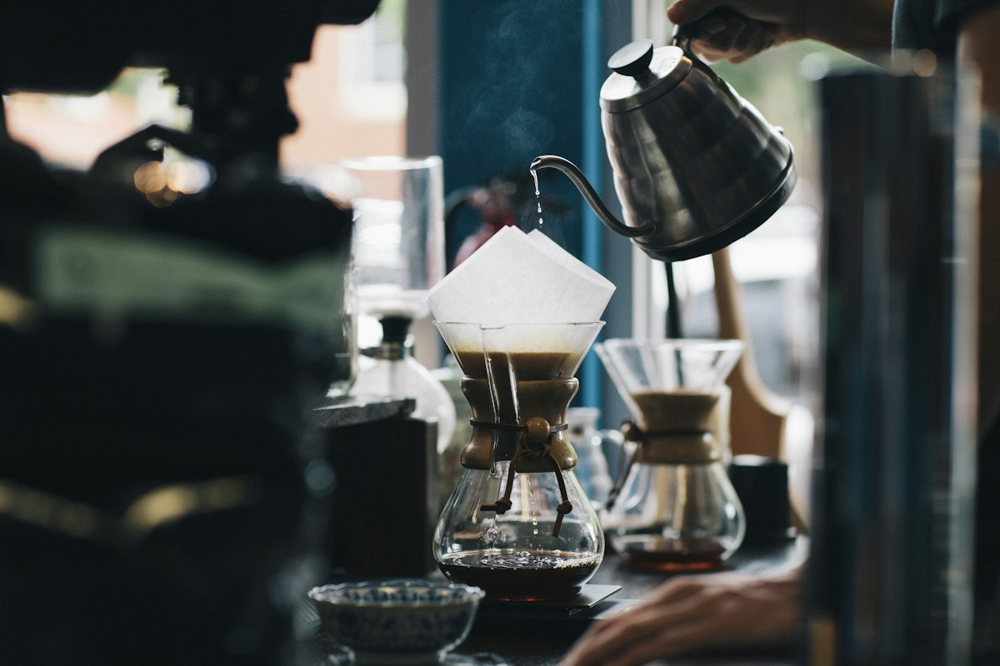
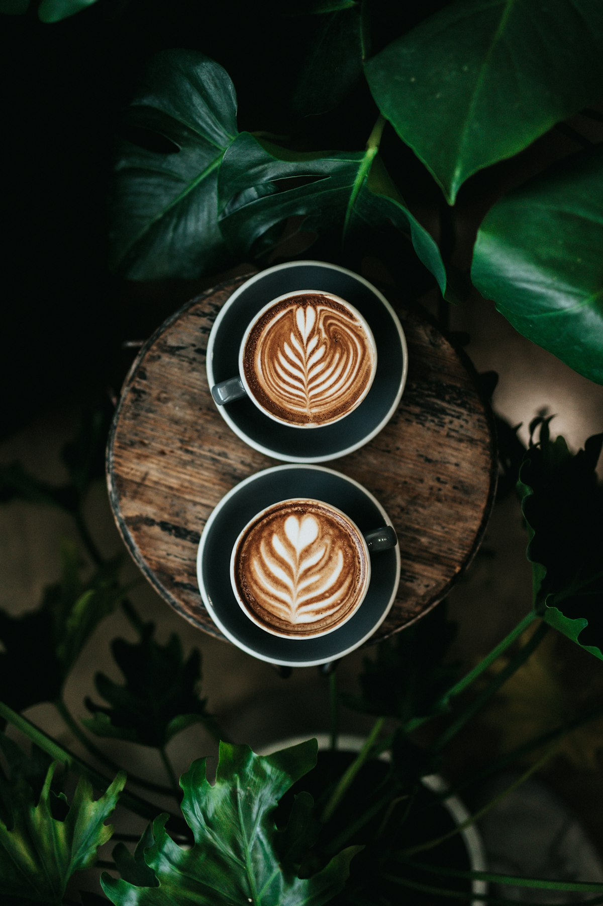
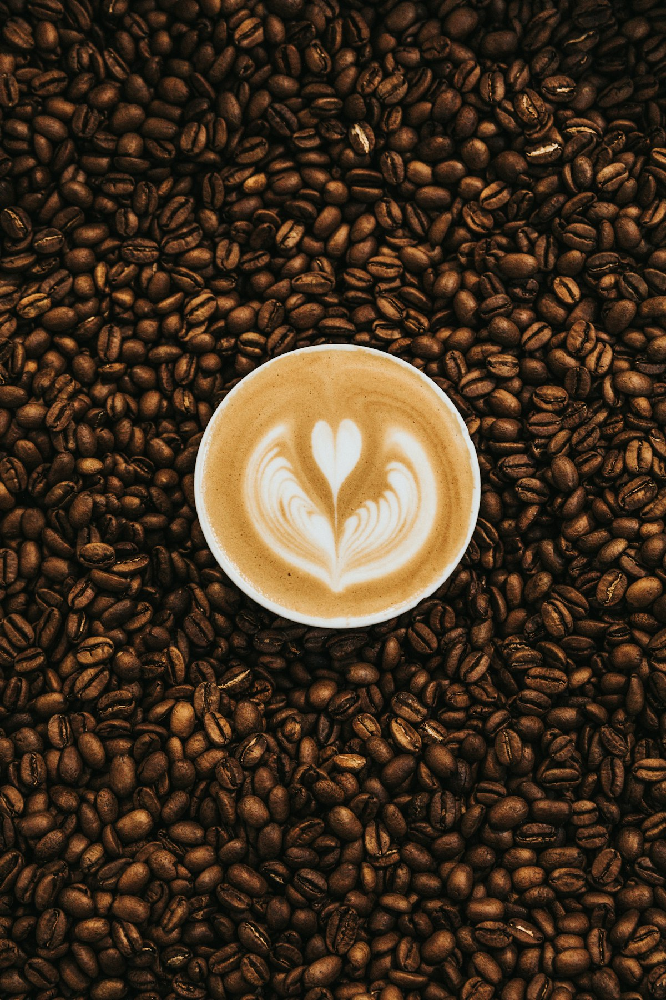
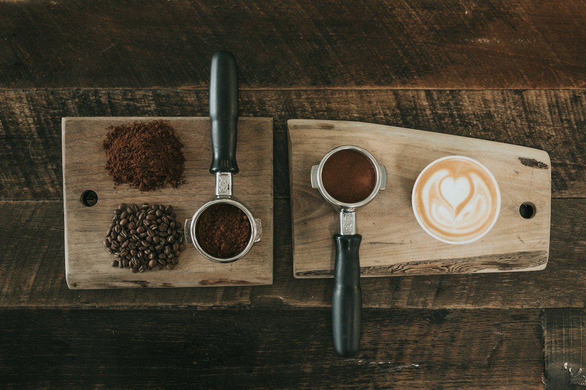

OUR STORY
Grown on our estate.Roasted with care.
For more than eighty years our family has grown coffee under the shade of the hills. Today we take every bean from cherry to cup, ourselves.
Shop our coffee
WHO WE ARE
A family estate with a roaster's heart
What started as a few acres of Arabica and Robusta has grown into a vertically integrated coffee house. We cultivate, harvest, pulp, cure, roast and grind in one place, so nothing about your cup is left to chance.
Keeping every step under one roof lets us trace every bag back to the plot it came from, and gives us the freedom to roast in small batches, to order.
Our journey
The first seedlings
Our grandfather plants the first Arabica under native shade trees.
Robusta joins the estate
The second generation adds Robusta and builds our first curing yard.
In-house processing
A dedicated pulping and curing unit brings processing under our own roof.
Small-batch roastery
We begin roasting to order, with every batch cupped before it ships.
Farm to doorstep
From our estate to coffee lovers across the country, still hand-sorted and freshly roasted.
What we stand for
Shade-grown, sustainably
Coffee grows beneath native canopy, protecting soil, water and the birds that call the estate home.
Roasted fresh to order
Your coffee is roasted after you order, never sitting on a shelf for weeks.
Obsessed with quality
Every lot is graded, sorted and cupped by hand before it earns our label.
Fair to our people
Pickers and processors are part of our extended family, with fair wages year-round.

THE CRAFT
Bean to cup, no shortcuts
From red ripe cherry to sealed pouch, there are seven careful stages, and we do each one ourselves. It is slower than the industrial route, and it is why our coffee tastes the way it does.
See the processThe people behind the cup
Arjun Rao
Estate ManagerThird-generation grower who knows every plot by name.
Meera Nair
Head RoasterDevelops every roast profile and cups each batch before it ships.
Kiran Patel
Quality LeadGrades, sorts and guards the standard of every bag.
Sana Iyer
Customer CareHere to help you find your perfect brew.
Life at the estate




